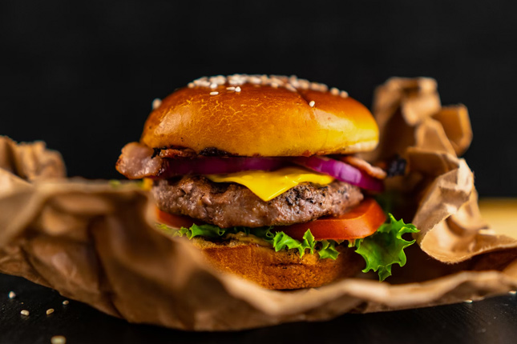

Coffee Selections


Delicious Snacks
- 


About Us
Welcome to Serene Sips Café, where every cup tells a story
Founded in 2020, our coffee journey began with a passion for creating a cozy haven for coffee lovers. We believe in the artistry of brewing, the warmth of community, and the joy found in a perfect cup of coffee
At Serene Sips Café, we source the finest coffee beans from around the world, ensuring a rich and flavorful experience in every sip. Our commitment to quality extends to our cozy atmosphere, where each visit feels like a comforting conversation among friends
Our skilled baristas craft each cup with precision and care, aiming to provide you with a delightful coffee experience every time. Whether you're a seasoned coffee enthusiast or a casual sipper, our diverse menu caters to every taste and preference
Join us in this journey of aroma, flavor, and community. Discover the magic that happens when passion meets a perfectly brewed cup of coffee at Serene Sips Café
Contact Us
Visit us at
serene sips cafe'56Street
Taunggyi